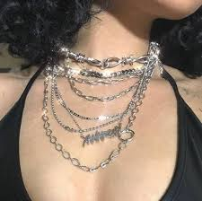
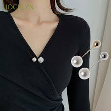
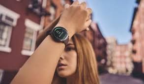
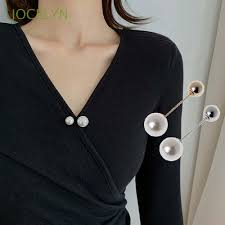
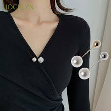

El uso de la joyeria surgio en el 3000 a.n.e con lo egipcios, quienes eran pioneros en casi todo.
Las primeras joyas eran,principalmente, hechas de oro, plata y cobre.
Estos adornos corporales solo le pertenecian a las clases sociales altas (los mas ricos),
y se las llevaban con ellos a la tumba.

Joyeria en la actualidad
El mundo joyero ha tomado fuerza a lo largo de los ultimos años, incluso despues de la pandemia.
Los cambios en la joyeria son mucho más lentos que en la vestimenta, pero no nula
y se busca ese cambio, probar nuevas piezas y que se adapten a tu nuevo estilo.
Tipos de Joyeria
Pendientes
Presion o rosca
Es el cierre tradicional donde la rosca se introduce en el perno.
Gancho
Es el cierre que termina en forma de U.
Catalán
El perno se introduce en el agujero del gancho y se presiona.
Omega
El perno se introduce en una pieza con la forma de la letra griega omega.
Ballestilla
En este caso el perno es quien tiene forma de gancho.
Criolla
El perno es recto, aunque el pendiente tenga forma circular.
trepadores o ear cuffs
Normalmente se utilizan en la parte superior de la oreja.
Collares o colgantes
Choker
de 30 a 40 cm de largo
Princesa
de 43 a 48 cm de largo
Matiné
de 50 a 60 cm de largo
Ópera
de 71 a 86 cm de largo
Cuerda
hasta 100 cm de largo
Pulseras
Brazalete
Esclavas
De tejidos
De silicona o goma
De cuero
De cuentas
De cordón
De eslabones
Anillos
Anillos de Promesa
Representa una relación con el compromiso futuro de una pareja
Anillo pasado,presente y futuro
Representa todos los momentos que un matrimonio a pasado
Anillo eternity
Simboliza un amor sin fin, se entrega despues de decadas de matrimonio
Broches
Se utilizan para hacer resaltar alguna prenda o ofrecer una mayor elegancia y estilo

Relojes
Reloj analógico
Reloj digital
Reloj de bolsillo

Piercings
Estas joyas suelen ser hipoalergénicas para evitar que tu cuerpo rechace o genere alguna alergia.
Antes se tomaban como un acto de rebeldia juvenil, pero ahora son joyas con mucho estilo y valor.
Tobilleras
Las tobilleras son joyas idóneas para la temporada primavera-verano.


 
